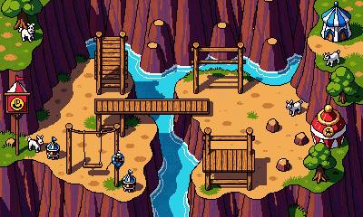

Daredevil Gorge
A whole map for Agility, the way the Guild is a whole building for Thieving: a carnival-painted stunt park in a river gorge south of the Yard. Three courses run through it (rope swings, balance logs, stepping rocks, monkey bars, a canopy walkway, a high wire, a zip line), and the courses are also the only way into three places nobody else can reach: a ledge, a canopy and a summit, each with a monster or a node that pays you for getting there. It replaces The Run and its two unbuilt lanes.

What RuneScape does, and what we take
Three courses
Each is a loop of obstacles you click one after another (the shortcut code: the server checks your level, walks you over, pays the XP). Finish a lap and you're back at the start. A fall below ten levels over the obstacle drops you in the river or a net beside it: a few seconds, no damage, the lap goes on.
The map
One screen, 44 by 26, entered from the Yard's south edge. A plan, not the finished art: the river runs down the middle, the courses climb from the bank to the cliffs to the canopy, and the three places hang off them.
Only by Agility
Each place is a stop on a course, so getting there is the lap and getting back is the rest of it. Nothing in them attacks on sight; nobody can walk in.
Runner's marks and the Bookie
The game already has runner's marks (three a run on The Run, 30 XP each, sold for 50 tickets). In the Gorge they drop on the course routes (about one every three laps on the Rookie Run, one every two on the Pro, one a lap on the Champion) and the Bookie at the finish line takes them:
Marks still sell to Bom for 50 tickets, so the Gorge pays a little like any skill; nothing at the Bookie is sold for tickets, and nothing here touches a bet.
Balance
Building it
- The map: the new-map pipeline (compose, walk grid, art, wire, test, pack) in the Yard's ground and cobble style, a river and cliffs from existing art, about 1.5 weeks with art.
- The courses: an ordered list of obstacles per course on the shortcut code (level check, crossing, XP), a lap counter, per-player marks on the route (The Run's marks already work per player), and the fall: back to a landing tile beside the obstacle. 3 days.
- Obstacle art: rope swing, balance log, stepping rocks, monkey bars, net, plank, zip line, high wire, pole: the four drawn for shortcuts plus five more. PixelLab.
- The places: three monsters (Ledge Goat, Canopy Bandit, Storm Eagle, drafts above; each needs its walk frames), three nodes (drafts above), the Eagle's pet, Skystone boots, the Quickfin fillet, the horseshoe. 1 week.
- The Bookie: an NPC with a shop window for marks (the Exchange's window pattern). 1 day.
- The Run: retired. The Yard's ladder goes, its quests ("Beat the Clock", "The Caravan Road") move to the Rookie Run, and best-lap boards move with them.
- In v1.1 with the thieving and shortcuts work, held behind the same kind of switch until the bundle ships.